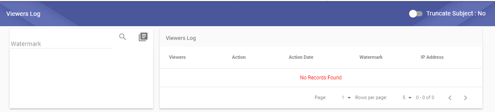

Through System administratore, the system allows you to view the log of users who viewed the book only and without permission.
A
new screen has been added allowing the user to search for the document
by the following (watermark serial number, book title) but only a
watermark display history will be displayed and the user cannot view the
document or its properties

 Note:
When you open or print the book the user's watermark is changed to
another.
Note:
When you open or print the book the user's watermark is changed to
another.